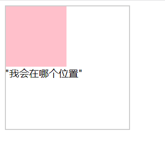

1
2
3
4
-------------------下面就可以说明ul可以比div这个父级大一些,将ul的背景色去掉， 使用者是看不到 ul大出一部分的， 父类nav右边放东西 也不会受到影响------------------------------------
-----------------------是由一点需要注意 浮动的盒子可以对同级的 或者父级使用 margin-right: --------------------------------
